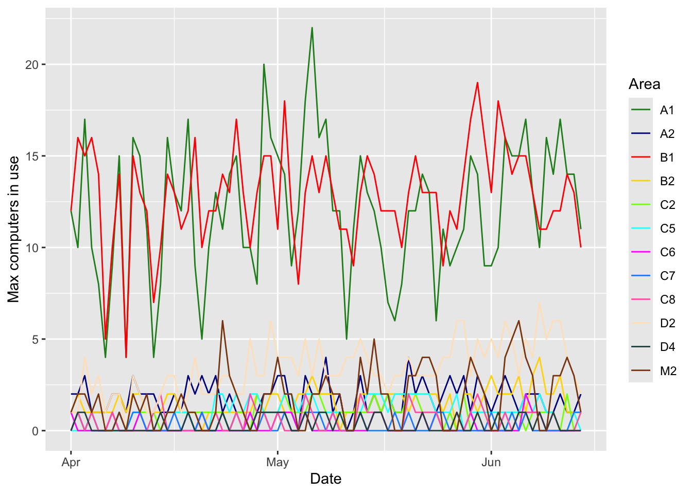

library(tidyverse)
library(readxl)
exam_week_start <- date("2024-06-08")
exam_week_end <- date("2024-06-14")
in_exam_week <- function(timestamp) {
between(date(timestamp), exam_week_start, exam_week_end)
}Public Computing Statistics
Script to read an Excel spreadsheet produced by Cybrarian and do some analysis. Limitation: dates of exam week are hard-coded below.
Load data
Expected columns and sample values:
| Item | Date | Login Time | Computer | User ID | User Name | Session Minutes |
|---|---|---|---|---|---|---|
| 1 | Monday April 1, 2024 | 7:57:09 AM | PC209-A1HG | warren390 | warren390 | 2 |
# Eliminate first 6 and last 5 rows
data <- read_xlsx("data/input.xlsx", skip=6)
data <- read_xlsx("data/input.xlsx", skip=6, n_max=nrow(data)-5)
# Incorporate the date column into the time column to form a unified
# timestamp column
date(data$`Login Time`) <- mdy(str_remove(data$Date, "^\\w+ "))
# Select and rename columns of interest
data <- select(data,
login_time=`Login Time`,
computer=Computer,
session_minutes=`Session Minutes`
)
# The next processing follows the instructions given in:
# https://ucsb-atlas.atlassian.net/wiki/spaces/LIB/pages/17314414653/Public+Computing+Annual+Statistics
# Remove virtual machines
data <- filter(data, !str_starts(computer, "PSY|PT|SYS"))
# Map computers to buildings and floors
data <- mutate(data,
building=case_when(
str_starts(computer, "OAM" ) ~ "Music",
str_starts(computer, "OA[^M]" ) ~ "B (middle 2-story)",
str_starts(computer, "PA" ) ~ "A (north 3-story)",
str_starts(computer, "PB" ) ~ "B (middle 2-story)",
str_starts(computer, "PC[124]" ) ~ "D (south 4-story)",
str_starts(computer, "PC[5678]") ~ "C (tower 8-story)",
str_starts(computer, "PFM" ) ~ "Music",
str_starts(computer, "PF[^M]" ) ~ "A (north 3-story)",
str_starts(computer, "PM" ) ~ "Music",
str_starts(computer, "PS2" ) ~ "C (tower 8-story)",
str_starts(computer, "PS3" ) ~ "A (north 3-story)", # Wiki says "SRC"
str_starts(computer, "PW" ) ~ "A (north 3-story)",
str_starts(computer, "RSV" ) ~ "B (middle 2-story)",
TRUE ~ NA
),
floor=case_when(
str_starts(computer, "OAM|PFM|PM") ~ 2,
str_starts(computer, "RSV") ~ 1,
str_starts(computer, "^[A-Z]+\\d\\d\\d-") ~
as.integer(sub("^[A-Z]+(\\d).*", "\\1", computer)),
TRUE ~ NA
)
)
# For certain plots it will be convenient to be able to refer to a
# building and floor more compactly as an "area". Note the reliance
# on how buildings are named in the above mapping.
data <- mutate(data,
area=paste(str_sub(building, 1, 1), floor, sep="")
)
# Fix up datatypes
data <- mutate(data,
computer=as.factor(computer),
session_minutes=as.integer(session_minutes),
building=as.factor(building),
floor=as.integer(floor),
area=as.factor(area)
)
# Create a dataframe listing the areas, for use in joins
areas <- unique(select(data, building, floor, area)) %>%
arrange(building, floor)
# For convenience, create a dataframe that counts numbers of logins
login_data <- data %>%
group_by(date=date(login_time), building, floor, area) %>%
summarize(num_logins=n())Analysis
Logins
Average logins per day
Code
df <- login_data %>% group_by(date) %>% summarize(num_logins=sum(num_logins))
round(mean(df$num_logins), 0)[1] 188Average logins per day, by area
Code
login_data %>%
group_by(Building=building, Floor=floor) %>%
summarize(`Average daily logins`=round(mean(num_logins), 0))| Building | Floor | Average daily logins |
|---|---|---|
| A (north 3-story) | 1 | 64 |
| A (north 3-story) | 2 | 5 |
| B (middle 2-story) | 1 | 95 |
| B (middle 2-story) | 2 | 4 |
| C (tower 8-story) | 2 | 2 |
| C (tower 8-story) | 5 | 3 |
| C (tower 8-story) | 6 | 1 |
| C (tower 8-story) | 7 | 1 |
| C (tower 8-story) | 8 | 2 |
| D (south 4-story) | 2 | 10 |
| D (south 4-story) | 4 | 1 |
| Music | 2 | 6 |
Duration
Average session duration
In minutes.
Code
round(mean(data$session_minutes), 0)[1] 74Average session duration, by area
Code
data %>%
group_by(Building=building, Floor=floor) %>%
summarize(`Average session duration (min)`=round(mean(session_minutes), 0))| Building | Floor | Average session duration (min) |
|---|---|---|
| A (north 3-story) | 1 | 75 |
| A (north 3-story) | 2 | 97 |
| B (middle 2-story) | 1 | 65 |
| B (middle 2-story) | 2 | 95 |
| C (tower 8-story) | 2 | 94 |
| C (tower 8-story) | 5 | 144 |
| C (tower 8-story) | 6 | 20 |
| C (tower 8-story) | 7 | 12 |
| C (tower 8-story) | 8 | 71 |
| D (south 4-story) | 2 | 116 |
| D (south 4-story) | 4 | 22 |
| Music | 2 | 73 |
Effects of exam week
Comparing usage during exam week and not.
Average logins per day
Code
login_data %>%
group_by(date) %>%
summarize(num_logins=sum(num_logins)) %>%
group_by(`Exam week?`=in_exam_week(date)) %>%
summarize(`Average daily logins`=round(mean(num_logins), 0))| Exam week? | Average daily logins |
|---|---|
| FALSE | 186 |
| TRUE | 207 |
Average logins per day, by building and area
Code
login_data %>%
group_by(date, building) %>%
summarize(num_logins=sum(num_logins)) %>%
group_by(`Exam week?`=in_exam_week(date), Building=building) %>%
summarize(`Average daily logins`=mean(num_logins)) %>%
ggplot(aes(x=Building, y=`Average daily logins`, fill=`Exam week?`)) +
geom_bar(stat="identity", position="dodge")
Code
login_data %>%
group_by(
`Exam week?`=in_exam_week(date),
`Area (= building + floor)`=area
) %>%
summarize(`Average daily logins`=mean(num_logins)) %>%
ggplot(
aes(
x=`Area (= building + floor)`,
y=`Average daily logins`,
fill=`Exam week?`
)
) +
geom_bar(stat="identity", position="dodge")
Average session duration
Code
data %>%
group_by(`Exam week?`=in_exam_week(login_time)) %>%
summarize(`Average session duration (min)`=round(mean(session_minutes), 0))| Exam week? | Average session duration (min) |
|---|---|
| FALSE | 72 |
| TRUE | 86 |
Average session duration, by building and area
Code
data %>%
group_by(`Exam week?`=in_exam_week(login_time), Building=building) %>%
summarize(`Average session duration (min)`=mean(session_minutes)) %>%
ggplot(
aes(x=Building, y=`Average session duration (min)`, fill=`Exam week?`)
) +
geom_bar(stat="identity", position="dodge")Code
data %>%
group_by(
`Exam week?`=in_exam_week(login_time),
`Area (= building + floor)`=area
) %>%
summarize(`Average session duration (min)`=mean(session_minutes)) %>%
ggplot(
aes(
x=`Area (= building + floor)`,
y=`Average session duration (min)`,
fill=`Exam week?`
)
) +
geom_bar(stat="identity", position="dodge")Peak usage
Cybrarian provides the start and end times of each session. Armed with this data, we can compute how many computers are in simultaneous use. The analysis below groups computers by building and floor, but does not otherwise distinguish between computers (i.e., all computers within an area are considered equivalent). First, prep the data…
# The loop below takes a looong time, hence the cache file. While
# there are more efficient algorithmic approaches, it's surprising how
# slow R is...
cache_file <- "data/in_use_data.RData"
if (file.exists(cache_file)) {
load(cache_file)
} else {
# Create a dataframe with a row for each minute and each area.
# Subtle point: we are not capturing the decay in usage that extends
# beyond the minute of the last login time.
earliest_mins <- as.integer(min(data$login_time)) %/% 60
latest_mins <- as.integer(max(data$login_time)) %/% 60
in_use_data <- crossing(
timestamp=as_datetime((earliest_mins:latest_mins)*60),
areas
)
in_use_data$num_in_use <- 0
in_use_data <- mutate(in_use_data,
num_in_use=as.integer(num_in_use)
)
for (i in rownames(data)) { # For each login/session
start <- data[i,]$login_time
second(start) <- 0
end <- start + minutes(data[i,]$session_minutes-1)
rows <- between(in_use_data$timestamp, start, end) &
in_use_data$building == data[i,]$building &
in_use_data$floor == data[i,]$floor
in_use_data[rows,"num_in_use"] <- in_use_data[rows,"num_in_use"] + 1
}
save(in_use_data, file=cache_file)
}Overall maximums, by area
Again, this is counting computers that are in simultaneous use.
Code
in_use_data %>%
group_by(Building=building, Floor=floor) %>%
summarize(`Max computers in use`=max(num_in_use))| Building | Floor | Max computers in use |
|---|---|---|
| A (north 3-story) | 1 | 22 |
| A (north 3-story) | 2 | 4 |
| B (middle 2-story) | 1 | 19 |
| B (middle 2-story) | 2 | 4 |
| C (tower 8-story) | 2 | 2 |
| C (tower 8-story) | 5 | 2 |
| C (tower 8-story) | 6 | 2 |
| C (tower 8-story) | 7 | 1 |
| C (tower 8-story) | 8 | 2 |
| D (south 4-story) | 2 | 7 |
| D (south 4-story) | 4 | 1 |
| Music | 2 | 6 |
Daily maximums, by building and area
Code
in_use_data %>%
group_by(timestamp, building) %>%
summarize(num_in_use=sum(num_in_use)) %>%
group_by(Building=building, Date=date(timestamp)) %>%
summarize(`Max computers in use`=max(num_in_use)) %>%
ggplot(aes(x=Date, y=`Max computers in use`, color=Building)) + geom_line()Code
in_use_data %>%
group_by(Area=area, Date=date(timestamp)) %>%
summarize(`Max computers in use`=max(num_in_use)) %>%
ggplot(aes(x=Date, y=`Max computers in use`, color=Area)) + geom_line()